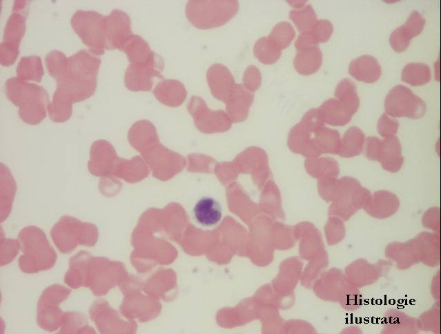
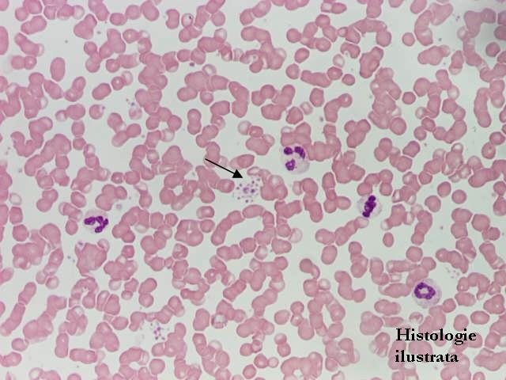
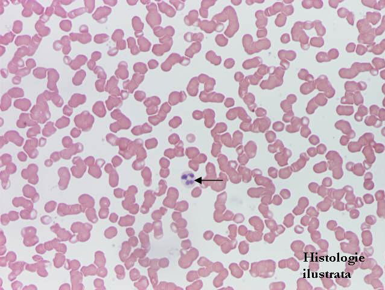
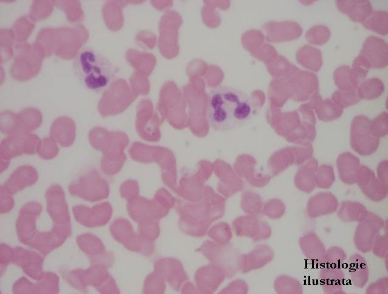
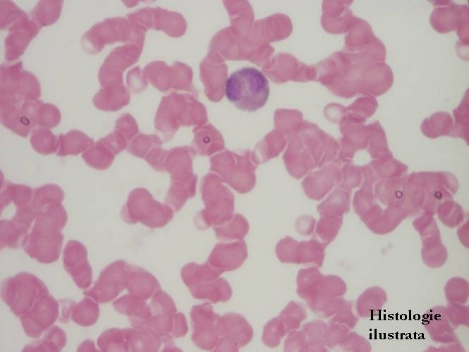
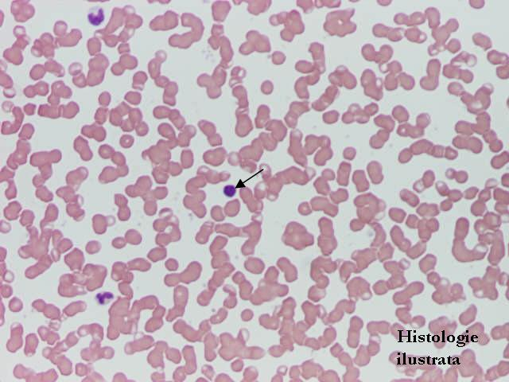
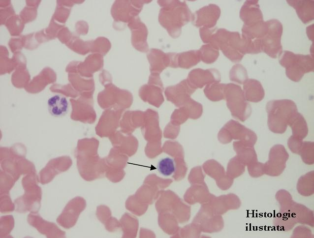
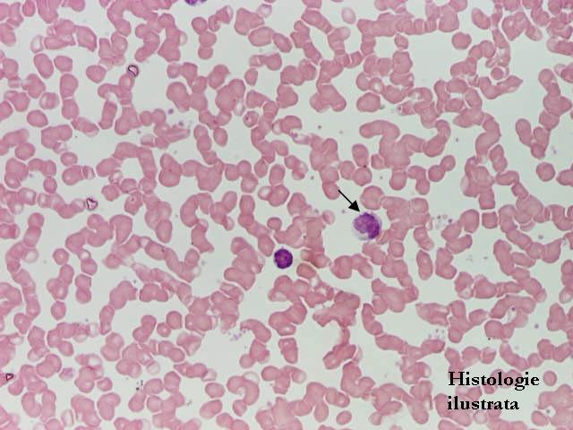
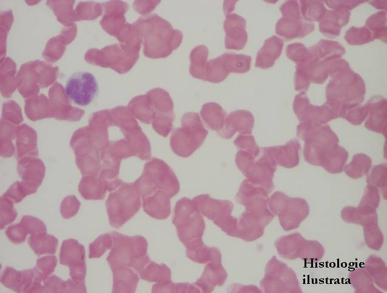

Cap.5 - Sângele |
|||
Frotiul sanguin |
|||
 |
 |
 |
 |
Fig. 181 - Frotiu sanguin – hematii, M.G.G. X 400
|
Fig. 182 - Frotiu sanguin – plachete sanguine,
M.G.G. X 200 |
Fig. 183 - Frotiu sanguin – polimorfonuclear neutrofil,
M.G.G. X 200
|
Fig. 184 - Frotiu sanguin – polimorfonuclear neutrofil,
M.G.G. X 400 |
 |
 |
 |
 |
Fig. 185 - Frotiu sanguin – eozinofil, M.G.G. X 400 |
Fig. 186 - Frotiu sanguin – limfocit, M.G.G. X 200 |
Fig. 187 - Frotiu sanguin – limfocit, M.G.G. X 400 |
Fig. 188 - Frotiu sanguin – monocit, M.G.G. X 200 |
 |
|||
Fig. 189 - Frotiul sanguin – monocit, M.G.G. X 400 |
|||